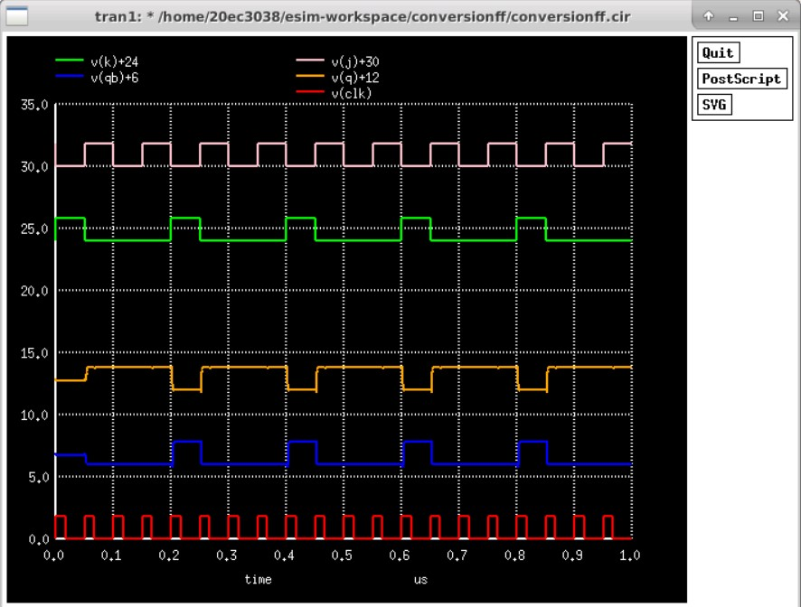

ACM VIDYUT PROJECT EXPO
FLIP FLOP FUSION
Give Set, Reset, and Q Inputs (S, R, Q):
Set input (S):
Reset input (R):
Current State (Q):
Convert to JK
Mixed Signal Output
Show Mixed Signal Output

Generated Verilog Code